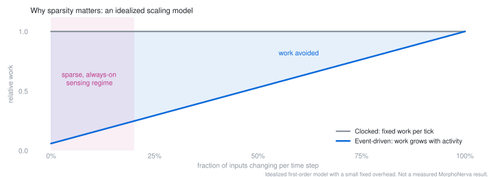
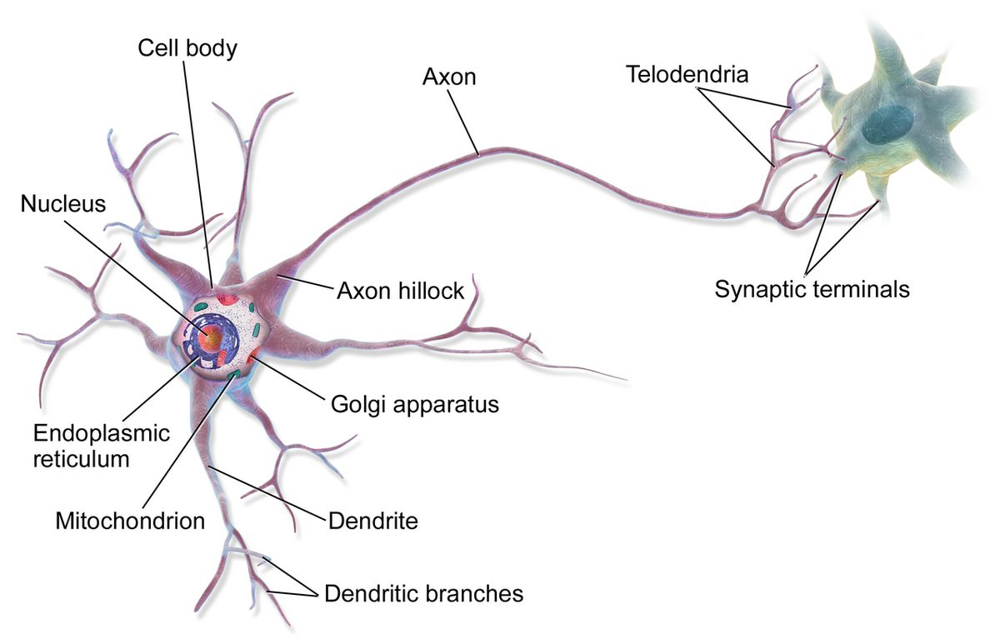

High-Level Technology Architecture
A full-stack, co-designed approach ensuring that what you simulate in software matches what hardware computes.

Traditional computing architectures process sensory data synchronously: clock cycles advance constantly, registers toggle, and ALUs execute operations on dense tensors whether the monitored physical environment changed or remained completely silent.
MorphoNerva builds event-driven digital computing cores where computational activity is triggered strictly by events. When sensory signals are quiet, the digital circuitry remains in a low-power quiescent state; when significant physical changes occur, sparse packets propagate through the network.
Why Event-Driven Processing Matters
Energy and compute scale with signal activity rather than a rigid clock frequency.


Work = c₀ + a · c₁.
The First-Order Activity Argument: If a fraction a of inputs changes per time step, clocked work is constant regardless of a, whereas event-driven work scales as c₀ + a · c₁. MorphoNerva's engineering objective is keeping fixed overhead c₀ minimal while preserving real sparsity on real-world sensor streams without compromising accuracy.
Biological Inspiration & Digital Spiking Neurons
Borrowing the principle of threshold-triggered sparse communication from nature.
Biological nervous systems achieve extreme energy efficiency through sparse temporal communication. A biological neuron integrates synaptic inputs over time. Only when the accumulated membrane potential crosses a threshold does it emit a brief action potential (spike) to downstream neurons; between spikes, it consumes near-zero dynamic power.
Digital spiking neural networks capture this behavior using deterministic, reproducible arithmetic. In our hardware, each neuron integrates incoming events, applies decay dynamics, and fires discrete spike packets when threshold criteria are satisfied.



Target Application Domains
Where event-driven neuromorphic edge computing delivers distinct architectural value.
| Domain | Challenge with Clocked Systems | MorphoNerva Event-Driven Approach |
|---|---|---|
| Industrial Machine Health | Continuous high-rate acoustic and vibrational sensor sampling drains batteries or requires tethered power. | Near-zero power listening during normal mechanical operation; instant spike burst upon anomaly or wear pattern onset. |
| Edge Audio Sensing | Constant digital signal processing across quiet ambient acoustic environments. | Sub-milliwatt continuous event detection, activating downstream analysis only upon acoustic trigger events. |
| Event Cameras & Robotics | High frame rates (1000+ fps) overwhelm memory bandwidth and create excessive latency in mobile robots. | Sub-millisecond latency processing event-by-event directly from dynamic vision sensors with minimal memory buffer footprint. |
| Scientific & Harsh Instruments | Remote instruments (environmental, seismic, aerospace) operate under strict thermal and battery constraints. | Always-on intelligent event detection and temporal classification at the sensor edge before transmitting telemetry. |
The "Model = Hardware" Contract
Eliminating silent numerical divergence between software training and silicon execution.
A major bottleneck in deployed neural acceleration is quantization and compilation mismatch: models trained in floating-point frameworks degrade or behave unpredictably when converted to integer hardware.
MorphoNerva resolves this at the architectural root: OmniSim and OmniSDK share an identical numerical contract with our digital RTL core. The model trained and verified in software is mathematically identical to the model executed on the digital accelerator.